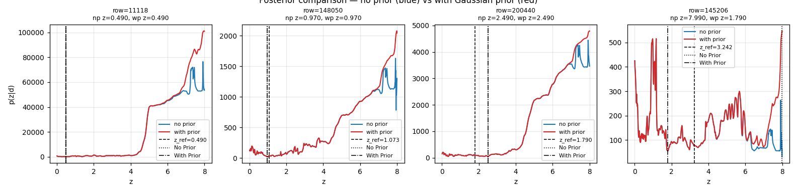
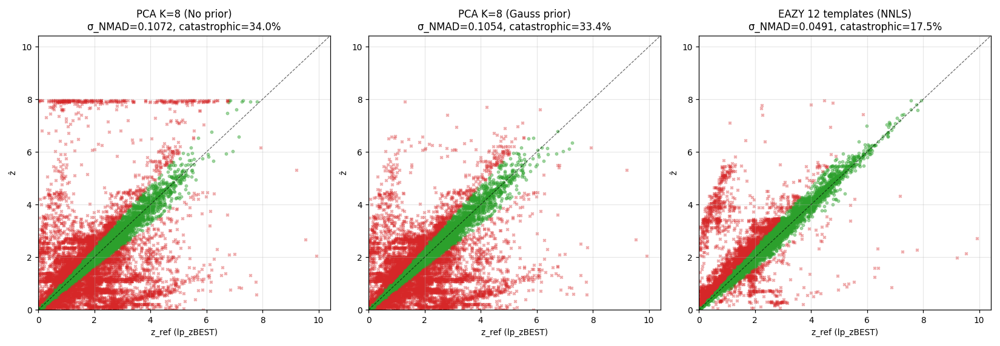
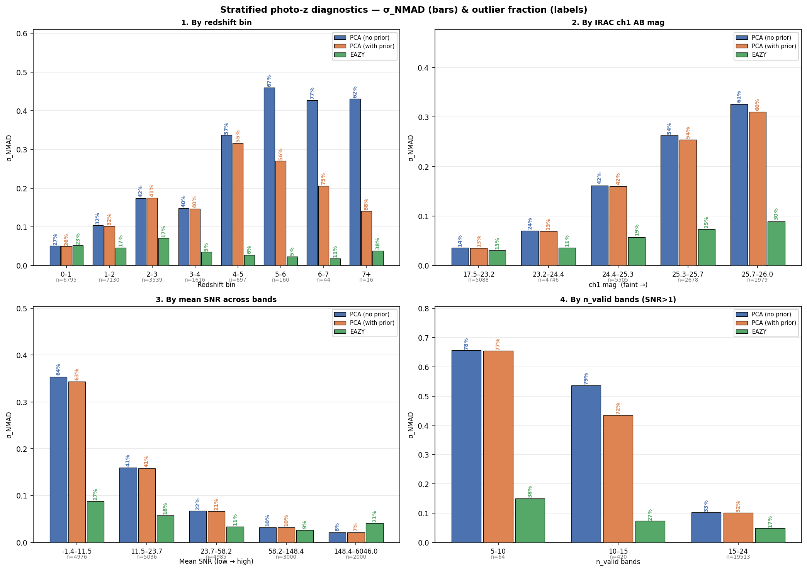
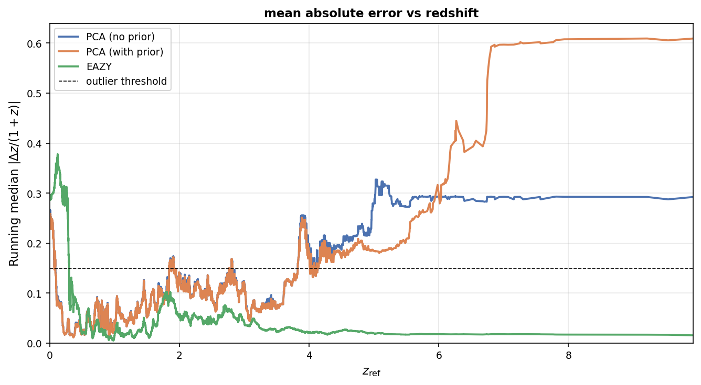

Everything so far has been a forward model: pick a galaxy, predict its fluxes. Now the arrow flips. Given 26 fluxes and nothing else — what is the galaxy's redshift? This chapter builds a χ² estimator with a population prior, tests it on 20,000 galaxies.
The idea is old and good: slide the model spectrum through every possible redshift and see where it matches the photometry best. What makes it fast here is that nothing expensive happens at fit time. The 8 PCA basis spectra plus the mean SED are redshifted, IGM-attenuated, and filter-projected in advance across a grid of trial redshifts (Δz = 0.05, z ∈ [0, 8]), producing a projection tensor: a lookup table of "what would basis component k contribute to filter b if the galaxy were at redshift z". Fitting a galaxy then reduces to sweeping a 1D grid of matrix operations.
Three deliberate design choices distinguish this pipeline from the population model of the previous chapter:
The prior deserves a careful reading: it is a prior on spectral shape, not on redshift. Every trial redshift is still evaluated on equal footing — what gets penalised are coefficient combinations that no real galaxy in the training set resembles. That distinction explains almost everything about the results below.

Each panel plots χ² against trial redshift for one real galaxy: blue without the prior, red with it. The dashed vertical line marks the LePhare reference redshift; dotted and dash-dot lines mark this pipeline's no-prior and with-prior estimates. In the first three galaxies, both curves carve a single decisive valley at the right redshift and agree almost perfectly — when the photometry is constraining, the prior simply stays out of the way.
Two crucial behaviours appear beyond that: (1) past z ≈ 6.5 the blue and red curves systematically diverge. There, the Gunn–Peterson trough blacks out so many blue bands that near-zero fluxes become trivially consistent with almost any SED — the no-prior χ² finds spurious low valleys at extreme redshift. The prior recognises the coefficient contortions required and prices them out. (2) The fourth galaxy (true z ≈ 3.24) is the failure mode made visible: without the prior, the fit invents an unphysical SED and confidently declares z ≈ 8; with the prior, that solution is suppressed entirely. The takeaway: the prior doesn't guarantee correctness — the rescued estimate lands near z ≈ 1.8, not 3.24 — but it removes the freedom to fail catastrophically via impossible spectra.

Each point is one evaluation galaxy: this pipeline's redshift on the vertical axis, LePhare's on the horizontal. Green points agree within the catastrophic-outlier threshold (|Δz|/(1+z) < 0.15); red points fail it. A perfect estimator would put everything on the diagonal.
What to look for: in the no-prior panel, a dense horizontal stripe of red hugs z ≈ 8 — the redshift ceiling artefact. These are galaxies for which the fit found the degenerate everything-is-dark solution from Figure 7.1 and pinned them to the top of the grid. With the prior, the stripe dissolves: the same galaxies scatter back toward the 1:1 line. The exact same pipeline is run with EAZY templates (rightmost panel). This achieves the best results, most points are around the 1:1 line, in the green zone, indiciating that the basis choice is extermely important.
The evaluation metric is σNMAD, a robust scatter measure, alongside the fraction of catastrophic outliers. One caveat frames everything: the reference redshifts are LePhare's photometric estimates, not spectroscopy. A perfect score here would mean perfect agreement with LePhare — not perfect truth. The thesis states this limitation up front and repeatedly.
| Method (identical pipeline, only templates differ) | σNMAD | Outliers | Bias |
|---|---|---|---|
| PCA K = 8, no prior | 0.1072 | 34.0% | +0.0005 |
| PCA K = 8, with population prior | 0.1054 | 33.4% | −0.0006 |
| EAZY 12 templates, same pipeline | 0.0491 | 17.5% | +0.0206 |
The EAZY row is the most scientifically valuable number in the chapter, precisely because it wins. By swapping only the templates — same grid, same χ², same everything — the twofold performance gap is isolated to a single cause: the spectral basis. The PCA components, trained on a simulated population, don't span the full colour diversity of real galaxies, especially where a Lyman break and a Balmer break masquerade as one another. That's a diagnosis with a prescription attached, not just a defeat. For context, the field's mature codes on COSMOS-like data: pop-cosmos 0.019 / 6.2% outliers, Prospector 0.021 / 6.6%, EAZY 0.019 / 6.8%, LePhare 0.024 / 8.4%.

Sixteen bar groups: σNMAD (bar height) and outlier percentage (printed above each bar) for the three methods — PCA no-prior (blue), PCA with prior (orange), EAZY (green) — stratified by redshift bin, IRAC ch1 magnitude, mean signal-to-noise, and number of valid bands.
The four stories: (1) Redshift: at z < 1 all three methods converge near σ ≈ 0.05 — with dense filter coverage the basis barely matters; degradation with z is universal but steepest for PCA. (2) Brightness: performance decays monotonically for fainter galaxies — and here the reference itself decays too, since LePhare is least reliable exactly where disagreement is scored highest. (3) SNR: the expected monotonic improvement — with one delightful anomaly: in the very highest-SNR bin, PCA edges out EAZY, plausibly because the training set is dominated by exactly these bright, low-z galaxies. (4) Valid bands: every extra filter is another constraint; performance climbs steadily with band count. Together the panels show a correctly-behaving estimator whose weakness is concentrated, not diffuse.

Median absolute error |Δz|/(1+z) against redshift for the three estimators. At low redshift all three track each other closely. Beyond z ≈ 5, the with-prior curve climbs above the no-prior one — the prior is now doing damage.
Why this matters and why it's subtle: Table 7.3 shows the prior slashing σNMAD at z > 5 (from 0.46 to 0.27 in the [5,6) bin), which looks like a triumph. This figure exposes what actually happened: because COSMOS is overwhelmingly a low-redshift sample, the training-set mean SED is a low-redshift SED — so at high z, where the IGM leaves few constraining bands, the prior herds all estimates into a tight cluster at the wrong redshift. Low scatter, high bias: σNMAD improves while outliers stay above 70%. It is a textbook illustration of why a single scatter statistic can flatter a broken regime — and it points directly at the fix: a redshift-dependent prior, which is exactly what the population model of the previous chapter provides. Wiring the two together is the thesis's flagged next step.